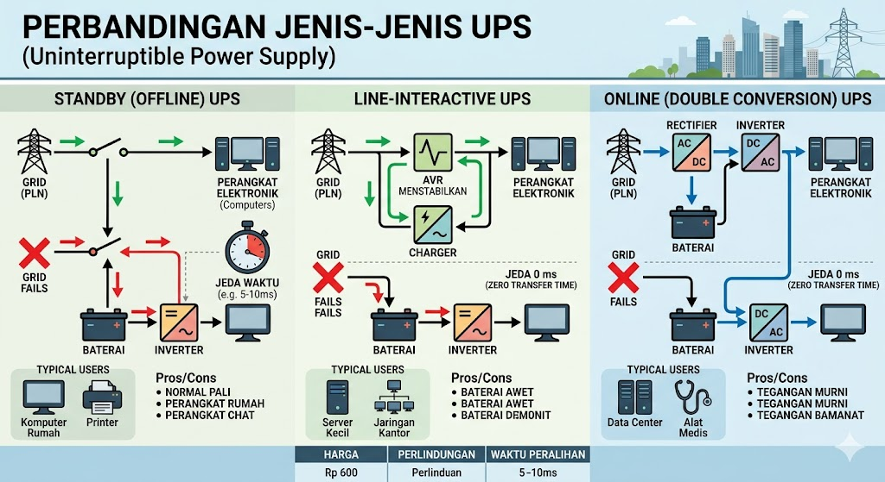
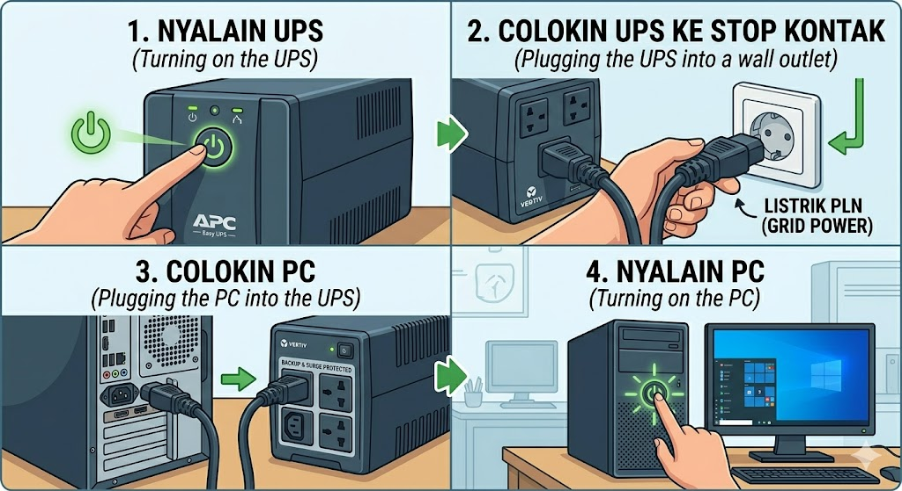

Panduan praktis untuk mahasiswa Teknik Informatika

Paling ekonomis. Ada jeda transfer 5-10ms saat listrik mati.
Catatan: Ketersediaan terbatas di Indonesia karena kebutuhan rendah.
Dilengkapi AVR. Ideal untuk menstabilkan voltase.
Lihat Produk →Perlindungan total tanpa jeda (0ms). Untuk server & medis.
Lihat Produk →
Rumus: Watt = VA × 0,6
VA adalah kapasitas total UPS, sedangkan Watt adalah konsumsi nyata perangkat Anda.
| Beban (Watt) | Estimasi Waktu |
|---|---|
| 650 Watt (Full Load) | ± 10 - 12 Menit |
| 300 Watt (Rata-rata) | ± 25 - 30 Menit |
Semakin kecil beban daya yang ditarik PC, maka semakin efisien penggunaan baterai UPS.
Analisis 300 Watt:
Dengan beban 300 Watt, UPS tidak bekerja terlalu keras (tidak panas), sehingga baterai dapat memberikan energi lebih awet dibandingkan beban penuh 650 Watt.
Umumnya menggunakan VRLA (Valve-Regulated Lead-Acid) jenis Sealed Lead Acid (SLA). Baterai ini bersifat bebas perawatan (maintenance-free) namun memiliki umur pakai terbatas (biasanya 2-3 tahun).